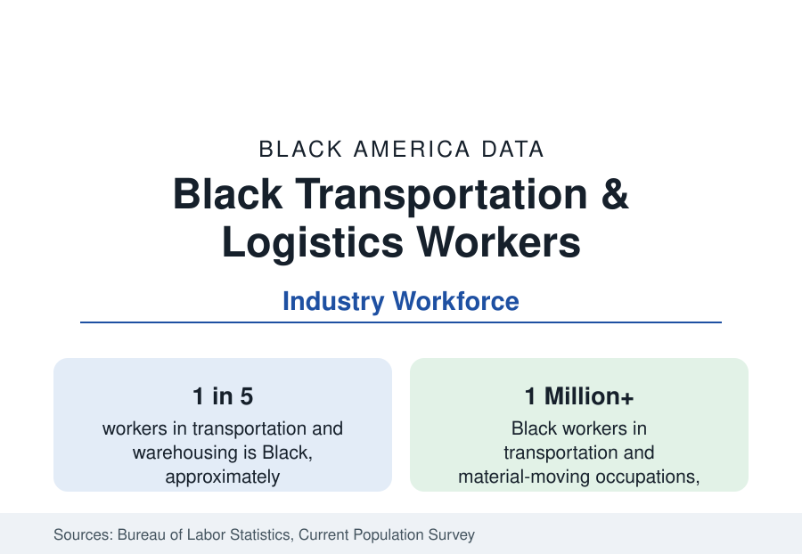

Black Employment
Black Workers in Transportation and Logistics: The Freight Economy's Workforce
Black workers form about a fifth of America's transportation and warehousing workforce — the industry that moves everything the economy sells. The BLS data.

More than a million Black workers move America. Black workers form roughly a fifth of the transportation and warehousing industry's workforce and about a fifth of the broader transportation and material-moving occupation group — among the highest industry shares in the employment data — spanning truck driving, transit operation, rail, air cargo, warehousing, and delivery. The industry's wages sit in the economy's middle, its union density in the upper range, and its geography on the freight map that this reference's city profiles keep drawing. This article reports the transportation and logistics workforce data.
The Segments: Road, Rail, Air, Water, Warehouse
Trucking is the segment's mass: Black drivers form a substantial share of the nation's heavy and tractor-trailer drivers — in the range of a sixth to a fifth in the occupation data — and a larger share of delivery and light-truck drivers, the last-mile workforce of the e-commerce era. Owner-operators, the industry's small-business tier, include a significant Black segment whose economics (fuel, insurance, maintenance, load-board access) the trade literature tracks separately. Transit is the public segment: Black workers form a large share — in many big-city systems a majority — of bus and rail operators and transit maintenance, unionized public employment on the public-sector pattern. Railroads carry a Black workforce with a singular history (the Pullman porters' union was a founding institution of Black labor) at shares now in the mid-teens percent. Warehousing, the growth segment, employs Black workers at the industry's highest shares — a quarter or more in the big fulfillment markets — at its lowest wages.
Geography: The Freight Map
The industry's Black workforce maps onto the freight corridors: Memphis (the air-cargo capital), Louisville (the UPS hub), Indianapolis, the Inland Empire of Southern California, the Lehigh Valley, Savannah and the Georgia ports corridor, Houston, Dallas-Fort Worth, Chicago's intermodal belt, and the port cities — Los Angeles/Long Beach, New York/New Jersey, Oakland, Norfolk, Baltimore, New Orleans — where longshore workforces have been substantially Black for a century. These are, not coincidentally, the metros of this reference's city profiles: the freight economy is one of the great employers of Black America precisely because its infrastructure was built where Black labor already was, and its suburban warehouse districts now draw the same workforce outward along the interstates.
Wages, Unions, and the Two Tiers
The industry is two labor markets wearing one name. The unionized tier — parcel delivery under national contracts, transit, the major freight railroads, the ports, parts of less-than-truckload trucking — pays middle-class wages with pensions and health coverage, and its Black workers' earnings approach the industry's top. The nonunion tier — warehouse fulfillment, last-mile contract delivery, much of truckload driving paid by the mile — pays at or below the national median with the industry's highest turnover and injury rates. Black workers are distributed across both, weighted toward the second in the growth segments. The earnings data aggregate accordingly: Black transportation workers' median pay trails the industry's overall median while exceeding most other industries' Black medians — a relative bright spot in the occupation tables whose internal spread is the story the single number hides.
Change: Automation and the Driver Question
The industry's forward data carry the section's largest technology exposure. Warehouse automation is restructuring the fulfillment workforce's task content; autonomous trucking, in development and limited deployment on the Sun Belt freight corridors, targets the long-haul driving segment where Black owner-operators and company drivers are concentrated; port automation is the standing labor question on both coasts. The projections literature treats the timeline as contested and the direction as settled, making the transportation workforce — a fifth of it Black, much of it mid-career without degrees — the employment section's largest single transition-risk population. The counterweights in the data: driver shortages that have raised wages in tight years, the non-automatable last-mile and transit segments, and the maintenance and technician tiers whose demand the same technology raises.
Reading the Transportation Data
Transportation is the industry where Black America's labor history and its present tense coincide most exactly: the porters' union founded modern Black labor; the freight map still employs a fifth-Black workforce; and the automation question will be answered on its corridors first. The figures here — a million workers, a fifth of the industry, two tiers a generation apart in pay — describe the economy's circulatory system and who staffs it.
More in Black Employment
The Black Unemployment Rate: The Two-to-One Pattern
Black unemployment runs at roughly twice the White rate — 5.5 percent against 3.3 percent in annual averages — a ratio stable across five decades of federal data. How it is measured and why it persists.
Black Median Weekly Earnings: The 80-Cent Ratio
Black full-time workers earn a median of about $900 a week — roughly 80 cents for every dollar White workers earn. The BLS earnings data by group, gender, and occupation.
Black Labor Force Participation: Working at National Rates
Black labor force participation runs at roughly the national rate — and Black women participate at higher rates than White women. The BLS participation data.
Source: U.S. Bureau of Labor Statistics, Current Population Survey and industry data; U.S. Census Bureau.